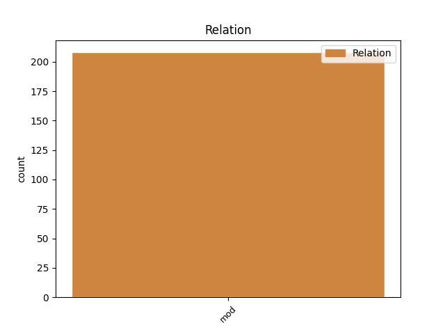
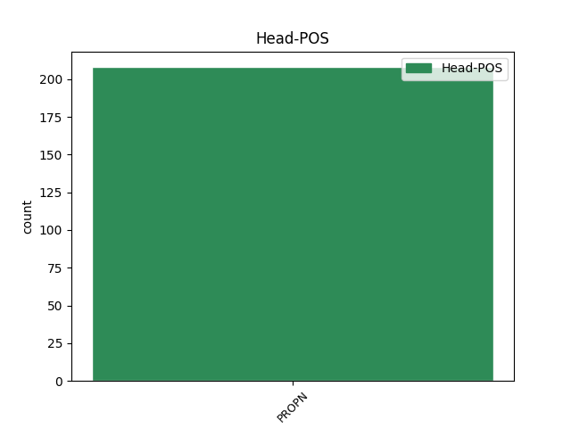
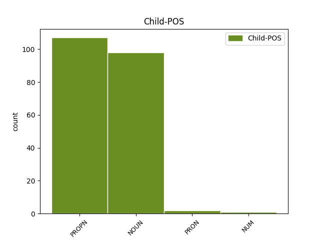

Distribution of features within this leaf



Agreement Rules sorted by frequency.
- When the dependent token is the modifer(mod) of the head token, and the head token is PROPN
1 சென்னையில் _ _ _ _ 0 _ _ _
2 கஸ்தூரிபா _ _ _ _ 0 _ _ _
3 காந்தி _ _ _ _ 0 _ _ _
4 தாய் _ _ _ _ 0 _ _ _
5 சேய் _ _ _ _ 0 _ _ _
6 நல _ _ _ _ 0 _ _ _
7 மருத்துவமனையின் _ _ _ _ 0 _ _ _
8 125-ம் _ _ _ _ 0 _ _ _
9 ஆண்டு _ _ _ _ 0 _ _ _
10 விழா _ _ _ _ 0 _ _ _
11 - _ _ _ _ 0 _ _ _
12 சேப்பாக்கம் _ _ _ _ 0 _ _ _
13 சட்டப் _ _ _ _ 0 _ _ _
14 பேரவை _ _ _ _ 0 _ _ _
15 உறுப்பினர் _ _ _ _ 0 _ _ _
16 தொகுதி _ _ _ _ 0 _ _ _
17 மேம்பாட்டு _ _ _ _ 0 _ _ _
18 நிதிய் _ _ _ _ 0 _ _ _
19 இலிருந்து _ _ _ _ 0 _ _ _
20 கட்டப்பட்ட _ _ _ _ 0 _ _ _
21 கட்டடங்களின் _ _ _ _ 0 _ _ _
22 திறப்பு _ _ _ _ 0 _ _ _
23 விழா _ _ _ _ 0 _ _ _
24 - _ _ _ _ 0 _ _ _
25 இதய _ _ _ _ 0 _ _ _
26 நோய் _ _ _ _ 0 _ _ _
27 மற்றும் _ _ _ _ 0 _ _ _
28 மகளிர் _ _ _ _ 0 _ _ _
29 கருப்பை _ _ _ _ 0 _ _ _
30 வாய் _ _ _ _ 0 _ _ _
31 , _ _ _ _ 0 _ _ _
32 மார்பகப் _ _ _ _ 0 _ _ _
33 புற்றுநோய்த் _ _ _ _ 0 _ _ _
34 தடுப்புத் _ _ _ _ 0 _ _ _
35 திட்டங்களை _ _ _ _ 0 _ _ _
36 வியாழக்கிழமை _ _ _ _ 0 _ _ _
37 தொடங்கி _ _ _ _ 0 _ _ _
38 வைத்து _ _ _ _ 0 _ _ _
39 முதல்வர் முதல்வர் NOUN NNN-3SH-- Case=Nom|Gender=Com|Number=Sing|Person=3|Polite=Form 40 mod _ LTranslit=mutalvar|Translit=mutalvar
40 கருணாநிதி கருணாநிதி PROPN NEN-3SH-- Case=Nom|Gender=Com|Number=Sing|Person=3|Polite=Form 0 _ _ _
41 பேசியத் _ _ _ _ 0 _ _ _
42 ஆவது _ _ _ _ 0 _ _ _
43 : _ _ _ _ 0 _ _ _
44 . _ _ _ _ 0 _ _ _
Disagree Examples:
1 சென்னை _ _ _ _ 0 _ _ _
2 அருகே _ _ _ _ 0 _ _ _
3 ஸ்ரீ ஸ்ரீ PROPN NEN-3SN-- Case=Nom|Gender=Neut|Number=Sing|Person=3 4 mod _ LTranslit=srī|Translit=srī
4 பெரும்புதூரில் பெரும்புதூர் PROPN NEL-3SN-- Case=Loc|Gender=Neut|Number=Sing|Person=3 0 _ _ _
5 கிரீன் _ _ _ _ 0 _ _ _
6 பீல்டு _ _ _ _ 0 _ _ _
7 ( _ _ _ _ 0 _ _ _
8 நவீன _ _ _ _ 0 _ _ _
9 ) _ _ _ _ 0 _ _ _
10 விமான _ _ _ _ 0 _ _ _
11 நிலையத்துக்குக்க் _ _ _ _ 0 _ _ _
12 ஆன _ _ _ _ 0 _ _ _
13 நிலம் _ _ _ _ 0 _ _ _
14 யாருக்கும் _ _ _ _ 0 _ _ _
15 பாதிப்பு _ _ _ _ 0 _ _ _
16 இல்லாத _ _ _ _ 0 _ _ _
17 வகையில் _ _ _ _ 0 _ _ _
18 எடுக்கப் _ _ _ _ 0 _ _ _
19 படும் _ _ _ _ 0 _ _ _
20 என்று _ _ _ _ 0 _ _ _
21 முதல்வர் _ _ _ _ 0 _ _ _
22 கருணாநிதி _ _ _ _ 0 _ _ _
23 உறுதியளித்த் _ _ _ _ 0 _ _ _
24 உள்ளார் _ _ _ _ 0 _ _ _
25 . _ _ _ _ 0 _ _ _
1 இத் இது PRON RpN-3SN-- Case=Nom|Gender=Neut|Number=Sing|Person=3|PronType=Prs 3 mod _ LTranslit=itu|Translit=it
2 ஏ _ _ _ _ 0 _ _ _
3 சர்வேயில் சர்வே PROPN NEL-3SN-- Case=Loc|Gender=Neut|Number=Sing|Person=3 0 _ _ _
4 , _ _ _ _ 0 _ _ _
5 ’ _ _ _ _ 0 _ _ _
6 அதிகம் _ _ _ _ 0 _ _ _
7 நேசிக்கப் _ _ _ _ 0 _ _ _
8 படும் _ _ _ _ 0 _ _ _
9 உலகத் _ _ _ _ 0 _ _ _
10 தலைவர்கள் _ _ _ _ 0 _ _ _
11 யார் _ _ _ _ 0 _ _ _
12 ? _ _ _ _ 0 _ _ _
13 ’ _ _ _ _ 0 _ _ _
14 என்ற _ _ _ _ 0 _ _ _
15 கருத்துக் _ _ _ _ 0 _ _ _
16 கணிப்பில் _ _ _ _ 0 _ _ _
17 , _ _ _ _ 0 _ _ _
18 இந்தியப் _ _ _ _ 0 _ _ _
19 பிரதமர் _ _ _ _ 0 _ _ _
20 மன்மோகன் _ _ _ _ 0 _ _ _
21 சிங் _ _ _ _ 0 _ _ _
22 முதலிடம் _ _ _ _ 0 _ _ _
23 பிடித்தார் _ _ _ _ 0 _ _ _
24 என்பது _ _ _ _ 0 _ _ _
25 குறிப்பிடத் _ _ _ _ 0 _ _ _
26 தக்கது _ _ _ _ 0 _ _ _
27 . _ _ _ _ 0 _ _ _
1 ஊதிய _ _ _ _ 0 _ _ _
2 உயர்வு _ _ _ _ 0 _ _ _
3 தொடர்பாக _ _ _ _ 0 _ _ _
4 நிதி _ _ _ _ 0 _ _ _
5 அமைச்சர் அமைச்சர் NOUN NNN-3SH-- Case=Nom|Gender=Com|Number=Sing|Person=3|Polite=Form 7 mod _ LTranslit=amaiccar|Translit=amaiccar
6 பிரணாப் _ _ _ _ 0 _ _ _
7 முகர்ஜியை முகர்ஜி PROPN NEA-3SH-- Case=Acc|Gender=Com|Number=Sing|Person=3|Polite=Form 0 _ _ _
8 பாஜக _ _ _ _ 0 _ _ _
9 , _ _ _ _ 0 _ _ _
10 ராஷ்ட்ரீய _ _ _ _ 0 _ _ _
11 ஜனதாதளம் _ _ _ _ 0 _ _ _
12 , _ _ _ _ 0 _ _ _
13 சமாஜவாதி _ _ _ _ 0 _ _ _
14 மற்றும் _ _ _ _ 0 _ _ _
15 ஐக்கிய _ _ _ _ 0 _ _ _
16 ஜனதாதள _ _ _ _ 0 _ _ _
17 தலைவர்கள் _ _ _ _ 0 _ _ _
18 சனிக்கிழமைய் _ _ _ _ 0 _ _ _
19 அன்று _ _ _ _ 0 _ _ _
20 சந்தித்தனர் _ _ _ _ 0 _ _ _
21 . _ _ _ _ 0 _ _ _
1 ஊதிய _ _ _ _ 0 _ _ _
2 உயர்வு _ _ _ _ 0 _ _ _
3 தொடர்பாக _ _ _ _ 0 _ _ _
4 நிதி _ _ _ _ 0 _ _ _
5 அமைச்சர் _ _ _ _ 0 _ _ _
6 பிரணாப் பிரணாப் PROPN NEN-3SN-- Case=Nom|Gender=Neut|Number=Sing|Person=3 7 mod _ LTranslit=piraṇāp|Translit=piraṇāp
7 முகர்ஜியை முகர்ஜி PROPN NEA-3SH-- Case=Acc|Gender=Com|Number=Sing|Person=3|Polite=Form 0 _ _ _
8 பாஜக _ _ _ _ 0 _ _ _
9 , _ _ _ _ 0 _ _ _
10 ராஷ்ட்ரீய _ _ _ _ 0 _ _ _
11 ஜனதாதளம் _ _ _ _ 0 _ _ _
12 , _ _ _ _ 0 _ _ _
13 சமாஜவாதி _ _ _ _ 0 _ _ _
14 மற்றும் _ _ _ _ 0 _ _ _
15 ஐக்கிய _ _ _ _ 0 _ _ _
16 ஜனதாதள _ _ _ _ 0 _ _ _
17 தலைவர்கள் _ _ _ _ 0 _ _ _
18 சனிக்கிழமைய் _ _ _ _ 0 _ _ _
19 அன்று _ _ _ _ 0 _ _ _
20 சந்தித்தனர் _ _ _ _ 0 _ _ _
21 . _ _ _ _ 0 _ _ _
1 இச்சந்திப்பின்போது _ _ _ _ 0 _ _ _
2 துணைவேந்தர் துணைவேந்தர் NOUN NNN-3SH-- Case=Nom|Gender=Com|Number=Sing|Person=3|Polite=Form 3 mod _ LTranslit=tuṇaivēntar|Translit=tuṇaivēntar
3 காளியப்பனின் காளியப்பன் PROPN NEG-3SH-- Case=Gen|Gender=Com|Number=Sing|Person=3|Polite=Form 0 _ _ _
4 மனைவிய் _ _ _ _ 0 _ _ _
5 உம் _ _ _ _ 0 _ _ _
6 உடன் _ _ _ _ 0 _ _ _
7 வந்த் _ _ _ _ 0 _ _ _
8 இருந்தார் _ _ _ _ 0 _ _ _
9 . _ _ _ _ 0 _ _ _